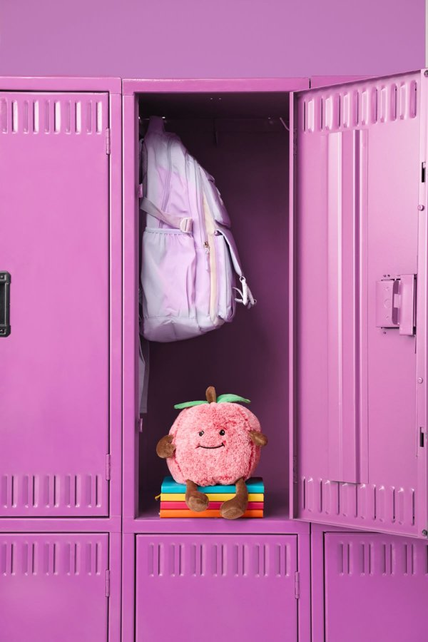

Chapel
A time for students to worship through song and engage in teaching from God’s Word.
Home/Student Life
Chapel, festivals, retreats, student leadership and an an after-school program for younger students.
A time for students to worship through song and engage in teaching from God’s Word.
Faculty-led groups that meet twice a month for spiritual growth.
A week of daily themed chapels focused on spiritual development.
An on-campus day that promotes spiritual growth and community.
A carnival with games, competitions and costumes.
Giving thanks together as a school family.
Choir performances from every grade level.
Holiday celebrations throughout the spring.
A Friday celebration to close the school year.
Music, awards, yearbook signings and farewells.
Honoring our graduates with their families and the whole community.
Students serve as president, vice president, treasurer, secretary and chaplains.
Students design and produce a hardcover yearbook that captures the school year.
Art, music, drama, desktop publishing and physical education electives in the upper school.

Our after-school program runs daily from 3:15 to 6:30 p.m. for children in kindergarten through fifth grade.
To register, contact office@kca.org.ua or call +38 (097) 359 7467.
Read what parents say about life at KCA.